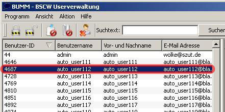
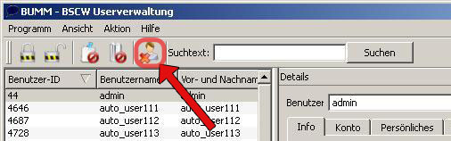
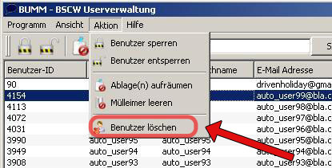
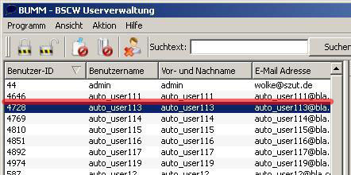

Benutzer löschen

1. Markieren sie zunächst den Benutzer den Sie löschen möchten.
 
2. Führen Sie eine der beiden Aktionen aus um das Löschen durchzuführen.

3. Der markierte Benutzer wurde gelöscht.